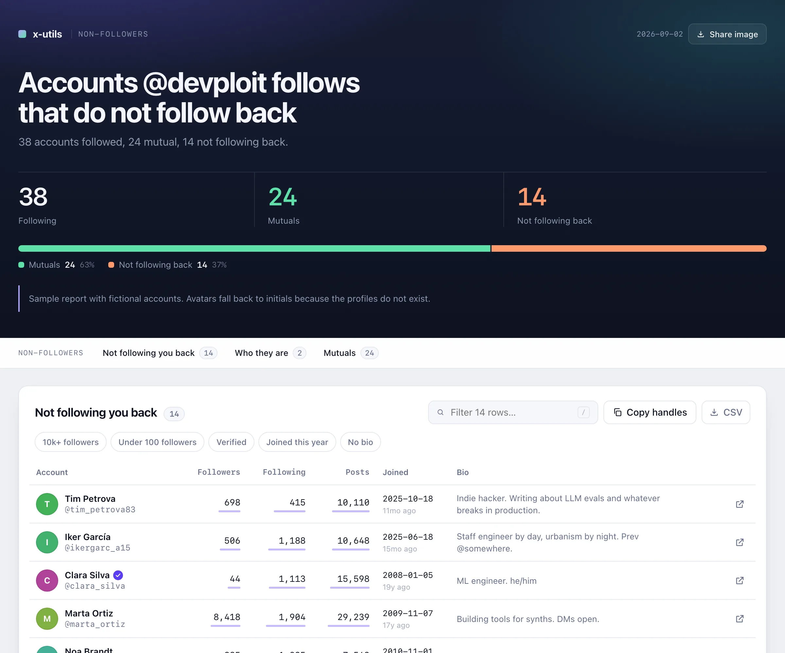
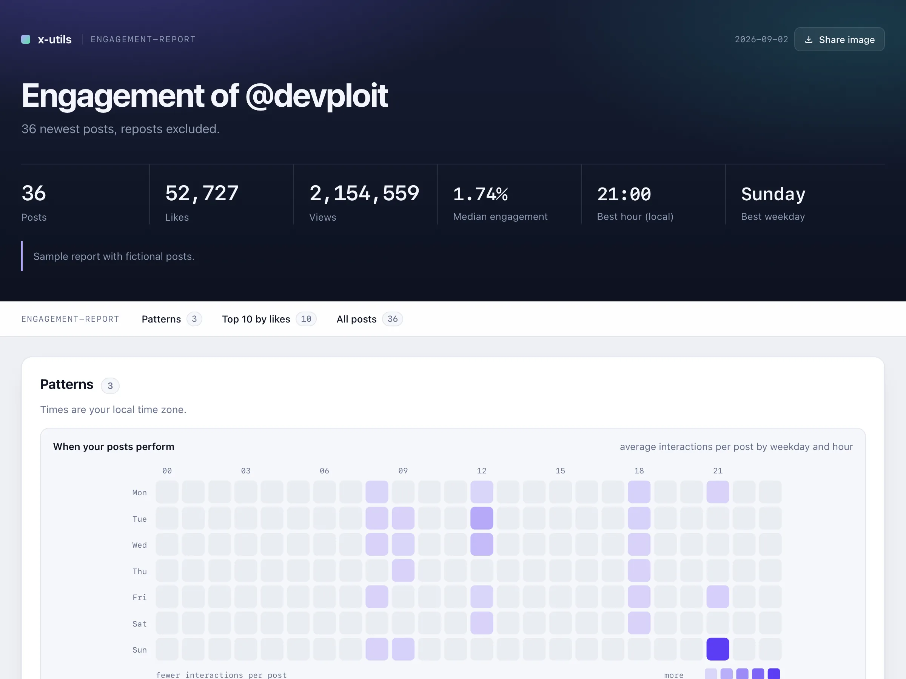
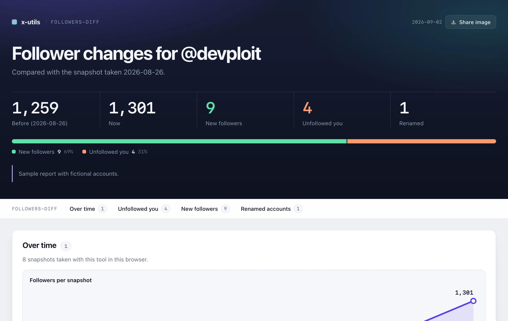
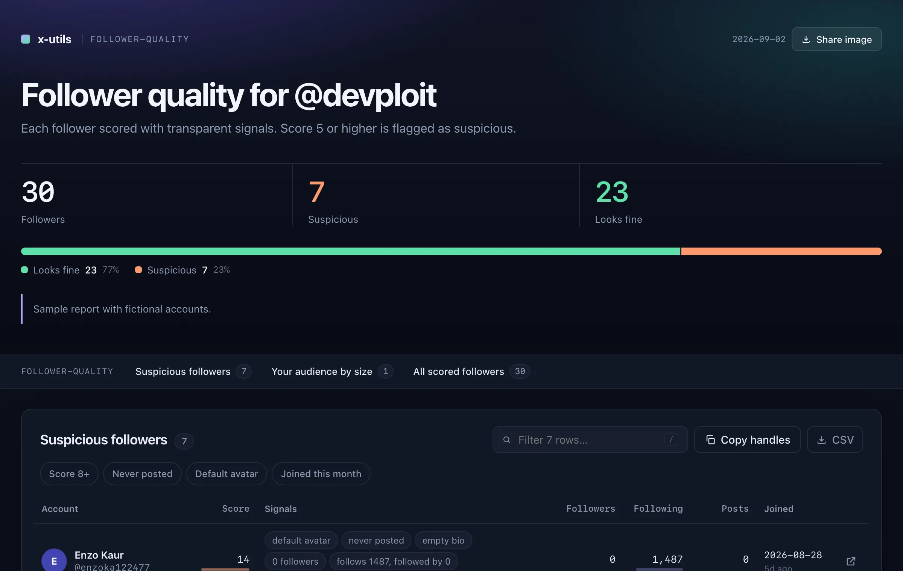
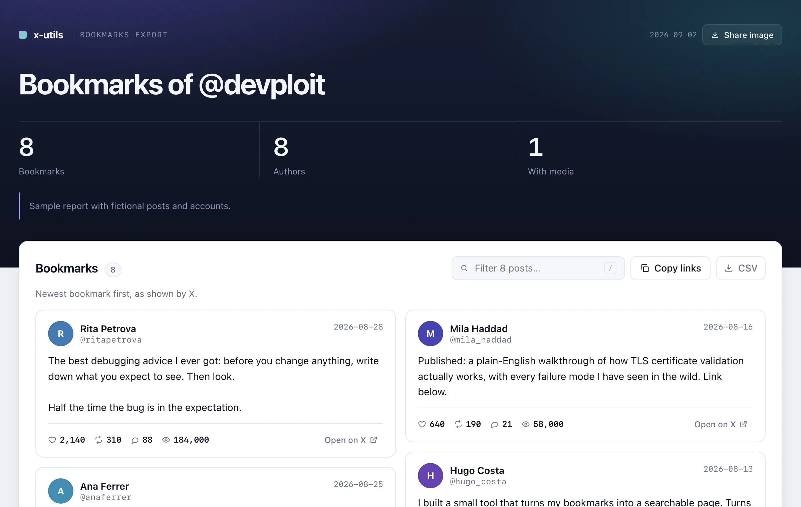

Non-followers: who does not follow you back most used
Who you follow that does not follow you back, with how big and how old each account is.
Needs: your following listEverything the paid "who unfollowed me" apps sell, without paying for X's API. You paste one thing into your browser, wait a minute, and get a report you can sort, search and share. No password, no install, no servers, no subscription.

Everything these tools show you is already on your screen when you scroll through X. They just do the scrolling and the note-taking for you. That is why there is nothing to pay: the expensive part, X's API, is never used.
Your following list, your followers, your bookmarks, or your profile. You are already logged in, nothing else is needed.
Into a panel every browser has, called the console. It scrolls the page for you and reads what X shows. It cannot see your password and it sends nothing anywhere.
A page with the answer in one sentence, the numbers, and a table you can sort and search. Plus a spreadsheet, if you want one.
Pick what you want to know and type your X username. The steps below adapt to you.
The tool needs your following list on screen.
If the page was already open, reload it (F5) right before pasting: the tool reads the list as X loads it.
Type your X username above and this link will point at your own list.
The console is a panel built into every browser. Nothing gets installed.
A panel opens at the side or bottom of the page. It looks roughly like the dark box shown here, and the line with the > is where you will paste.
This copies the whole tool to your clipboard. It is plain text you can read.
Click on the line with the >, paste with Cmd + V on a Mac or Ctrl + V elsewhere, and press Enter.
A small panel appears in the corner of the X page and the page starts scrolling by itself. Keep that tab in front.
When it finishes, the panel shows the result and an Preview (read-only) button. The full interactive report and a spreadsheet are saved in your Downloads folder; open the .html file from there to filter, sort and export.
Every tool only reads. None of them follows, unfollows, blocks, likes, posts or deletes anything. Some take a while because X limits how fast lists and profiles can be read; those are marked, and the tool waits through the pauses for you.
Who you follow that does not follow you back, with how big and how old each account is.
Needs: your following listWho follows you that you do not follow back.
Needs: your followers listRun it today and again later: who left, who is new, who changed their name, and a chart over time.
Needs: your followers listEvery follower scored with bot signals. Suspicious ones first, and it tells you why.
Needs: your followers listAccounts you follow that have not posted in months, or ever. Checks the ones that do not follow you back by default (edit the script to check everyone). X allows about 50 checks per 15 minutes; longer lists run in batches with pauses.
Needs: your following listA copy of your blocked or muted accounts, so they exist somewhere X cannot take away.
Needs: your blocked or muted settings pageYour posts ranked by likes, views and engagement rate, with a heatmap of when your posts perform best. Works on any public profile.
Needs: a profile pageEvery bookmark as a readable page, a file for your notes app and a spreadsheet.
Needs: your bookmarks pageThe same for everything you liked.
Needs: your likes pageA whole thread as clean text, from any post in it.
Needs: any post of the threadAny search, including advanced operators, as a spreadsheet.
Needs: a search results pageEveryone on any List, flagged with whether you follow them and whether they follow you.
Needs: a List members pageThese are real reports built from made-up accounts and posts. Sort the tables, type in the filters, press the buttons.

Engagement reportBest hour to post, top posts, charts
Who unfollowed meLeft, new, renamed, trend over time
Follower qualityBot signals, scores, reasons
BookmarksReading cards with media and numbersPasting things into a console is a bad habit in general. Here is why it is fine here, and how you can check it yourself.
The script runs inside the X tab where you are already logged in. It never asks for, reads or stores your password, cookies or keys.
There is no server behind this. The report and the spreadsheet are written straight into your Downloads folder. Search the script for "http" and you will only find x.com.
No tool follows, unfollows, blocks, likes, posts or deletes. It scrolls and takes notes, like a very fast assistant looking at your screen.
The code is open, short, in plain JavaScript, and published on GitHub. If you know a developer, ask them to look. That is exactly what the console warning is for.
The usual suspects, in order of how often they happen.
Type exactly allow pasting, press Enter, then paste the script again. The browser only asks once.
Make sure you pressed Enter after pasting, and that you pasted in the Console tab, not in another tab of the panel. If the console shows a red message saying "This tool must run on…", you are on the wrong X page: it tells you which one to open.
That is X limiting how fast a list can be read. The tool notices, shows a countdown in its panel and retries with growing pauses (up to about ten minutes in total) before giving up. If it gives up, it saves what it has and tells you; wait 15 minutes and run it again. On very large lists you can also raise scrollDelayMs at the top of the script to 1500 or more.
Look in your browser's downloads (the arrow icon near the address bar). The first time, the browser may ask permission to download several files at once: allow it. The panel in the corner of the page also has an Preview button.
It depends on how many accounts or posts there are. Up to a few hundred: about a minute. Around a thousand: a few minutes. Several thousand followers: X pauses the list every so often for minutes at a time; the tool tells you how long before you start, waits through the pauses with a countdown, and if X refuses for good it saves what it has so you can run again 15 minutes later. Keep the tab open and in front while it runs.
Phones do not have a console, so this only works on a computer with Chrome, Edge, Brave, Arc or Firefox. Send yourself this link and continue there.
The tools recognise the interface in English, Spanish, French, German, Italian, Portuguese and a few more. If yours is another language, switch X to English while you run the tool, then switch back.
X had the list already in memory, so the tool could not read it as it loaded and is asking about each account instead. It works, just slower. Next time reload the X page (F5) right before pasting the script and the list arrives fresh.
X loads the first screen before the script starts. The tool tries to refresh it; when it cannot, those rows keep only what was on screen. The console tells you how many rows were affected.
It reads pages you can already see, slower than a person scrolling fast, and changes nothing. It is not an official X product, so use it on your own account at your own discretion. Millions of people use similar browser tools every day.